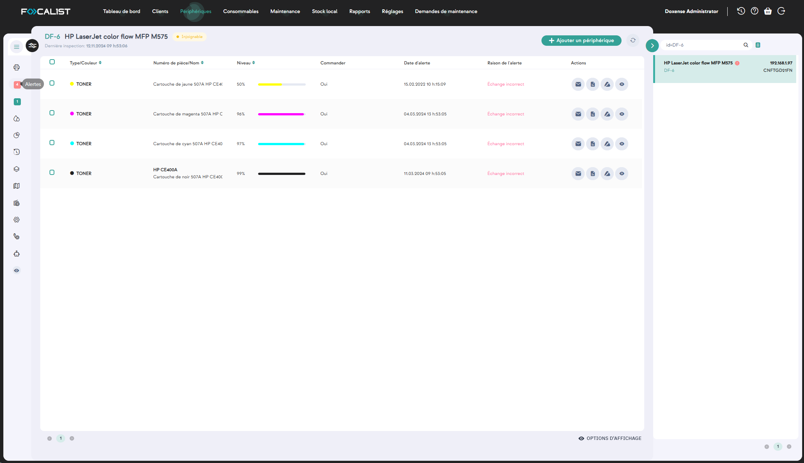
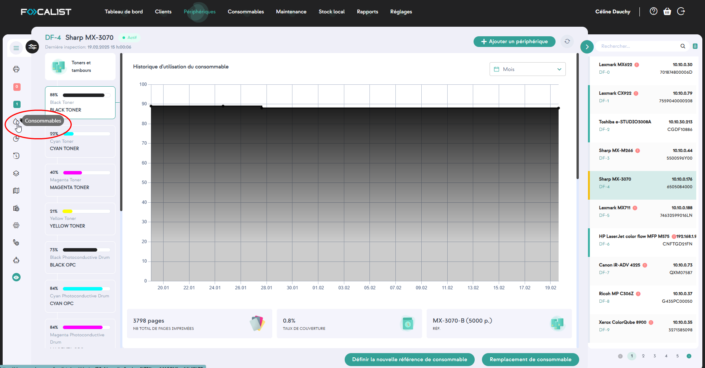
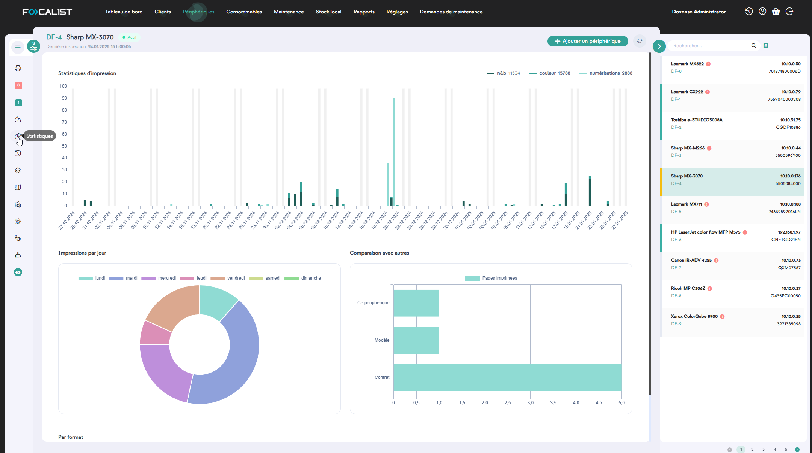
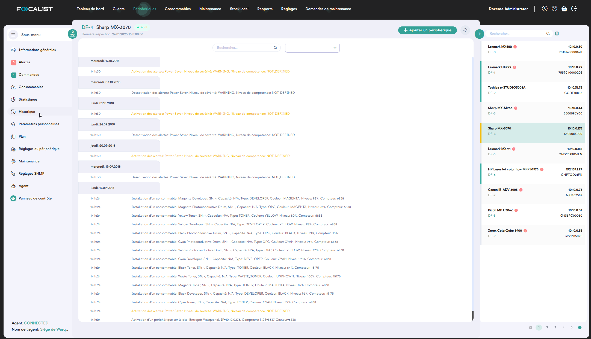
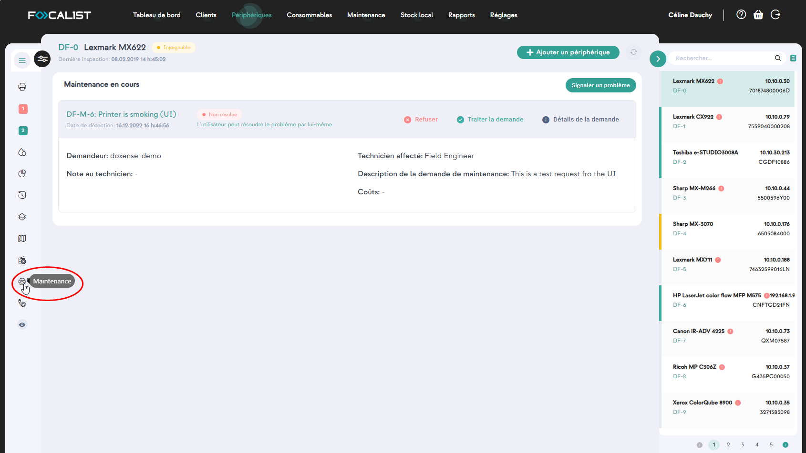
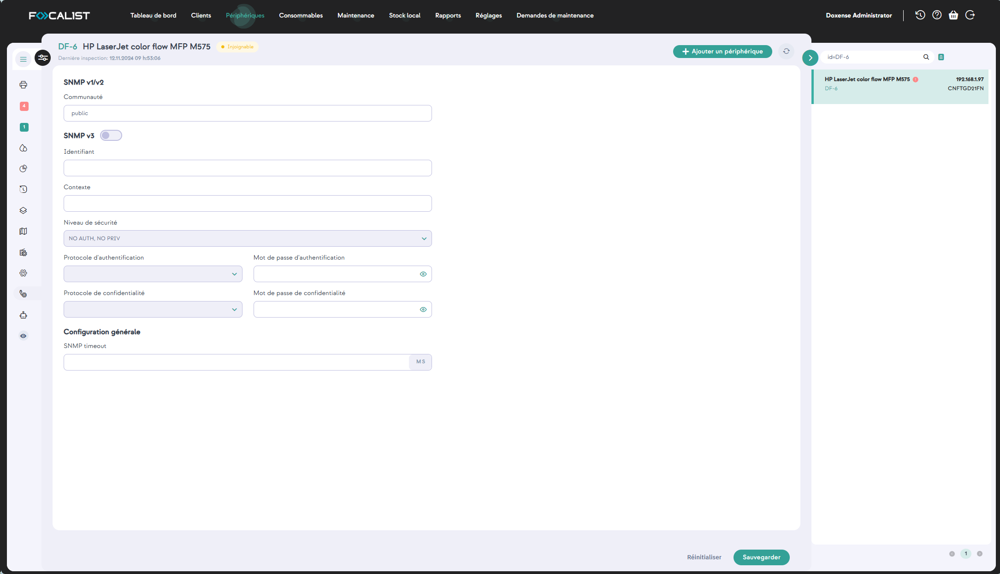

Périphériques
L’onglet Périphériques contient tous les périphériques que vous avez ajoutés et affiche un grand nombre d'informations à propos de ces derniers tels que, par exemple :
-
Etat : permettant de détecter des problèmes de disponibilité des périphériques
-
l'identifiant du périphérique fourni lors de son ajout dans la liste
-
la colonne suivante affiche une alerte dans le cas où un dysfonctionnement concerne un périphérique ;
-
l'état de remplissage des consommables, de manière à en prévoir le remplacement
-
le compteur de pages imprimées
-
le type de connexion
-
...
Une zone située dans le bandeau haut permet de saisir un critère de recherche.
Par ailleurs, dans le panneau de gauche Recherche avancée, des critères permettent de filtrer la liste des périphériques affichés (clients et sites, modèles, coordinateur, état du périphérique, paramètres, etc.).
Périphérique
Informations générales
Pour accéder aux paramètres détaillés d’un périphérique, cliquez sur son nom dans la colonne Identifiant du périphérique. Une fenêtre contenant des informations générales sur le périphérique en question apparaît. Les autres périphériques s’affichent alors dans le panneau de droite.
Les informations détaillées sur le périphérique sont réparties dans différentes sections:
-
Information générale
-
Compteurs
-
Paramètres personnalisés : informations sur les dictionnaires utilisés pour cette imprimante, le signe plus à droite vous renvoie directement vers les Paramètres du périphérique.
-
Toners et tambours
-
Kit d’entretien/autres
Alertes
L’onglet Alertes se trouve sur le côté gauche et concerne les pannes des périphériques et le niveau faible des consommables.
L’onglet Alertes affiche les erreurs relatives aux périphériques qui dysfonctionnent :

Les alertes peuvent donner lieu à quatre actions possibles :
-
Envoyer un e-mail
-
Ajouter une note, noter
-
Ignorer l’alarme,
-
Détails

Commandes
Les commandes sont l’une des principales fonctions de Focalist : à intervalles réguliers et prédéfinis, les agents interrogent les périphériques pour connaître l’état des ressources. Si le niveau des consommables est faible, Focaliste génère une commande. Les commandes générées sont également visibles dans la section Consommables du périphérique sélectionné :
Les informations affichées dans cette page permettent d'identifier les consommables commandés et de suivre l'évolution des commandes.
Consommables
Cet onglet contient des informations sur les consommables installés dans l’imprimante. Vous pouvez également vérifier chaque consommable séparément et voir les statistiques qui les concernent :

Statistiques
Cette section contient des statistiques détaillées du périphérique d'impression.
Pour que ces données statistiques soient plus lisibles, nous vous recommandons de séparer les pages imprimées par format (A3, A4, etc.) et monochrome/couleur :

Comment les pages sont-elles comptées par Focalist ?
C’est l’une des questions les plus fréquemment posées, car il arrive souvent que le nombre de pages dans l’application Focalist soit différent de celui fourni par l’imprimante.
Chez Focalist, nous éditons le résultat final total des pages imprimées au format A4. Les pages sont comptées par Focalist de la manière suivante :
-
A3 et formats plus grands - 2 pages
-
Tous les autres formats inférieurs à A3 - 1 page
Historique
La section Historique contient des informations sur les opérations réalisées avec le périphérique depuis qu’il a été ajouté à l’application. Les informations peuvent être des messages d’erreur, des données sur l’installation du toner ou l’activation du périphérique, par exemple :

Paramètres personnalisés
Cet onglet donne accès à des informations complémentaires relatives aux périphériques.
Plan
Quand le parc des périphériques est étendu, il peut être utile de situer chaque périphérique d'impression sur un plan des lieux et des étages où ils se situent.
Pour ajouter un plan, cliquez sur le bouton  Gérer les étages et ajoutez le plan correspondant à l'étage décrit :
Gérer les étages et ajoutez le plan correspondant à l'étage décrit : 
.
Réglages du périphérique
Ces informations sont affichées et incluses dans les rapports générés par Focalist.
-
Adresse du site : sélectionnez l'adresse du site sur lequel se trouve le périphérique ;
-
Coordinateur : sélectionnez le coordinateur dans la liste déroulante ou choisissez d'utiliser le coordinateur du site ;
-
Rapports : choisissez d'inclure ou d'exclure le périphérique des rapports ;
-
Réglage des commandes : cette section contient des options permettant de personnaliser la génération des commandes pour chaque périphérique :
-
choisissez d'inclure ou d'exclure le périphérique des commandes ;
-
choisissez de personnaliser ou non les commandes du périphérique ;
-
choisissez de générer les commandes, puis précisez la méthode de génération adoptée.
-
-
Remplacement : choisissez de vérifier, ou non, si les consommables remplacés sur ce périphérique sont correctement installés et précisez les paramètres associés.
-
Réglages des coûts : optez pour le mode de coût souhaité.

-
Maintenance
Depuis cet onglet, il est possible de signaler un problème relatif au périphérique et de consulter les données relatives à une maintenance en cours. 
Cliquez sur Signaler un problème pour saisir une nouvelle demande de maintenance, affectée à un technicien et complétée, si nécessaire, par des fichiers de logs ou d'image :
Réglages SNMP
Dans cet onglet, vous pouvez définir les données de configuration du protocole SNMP :
-
pour SNMP v1/v2, il suffit de configurer le paramètre Chaîne de communauté ;
-
pour SNMP v3, il convient de compléter tous les paramètres figurant dans le forrmulaire :

Panneau de contrôle
Cette option n'est pas disponible par défaut, les clients doivent donc faire une demande d'assistance pour la débloquer.
De plus, l'option Agent part l'imprimante est ajoutée. Cette option doit être déverrouillée. Vous pouvez déverrouiller l'agent en ajoutant la ligne remotePanel=true dans le fichier agent.config du répertoire config/ à l'endroit où l'agent a été installé. Si le fichier n'existe pas, vous devez le créer et y ajouter cette ligne.
Lorsqu'il est disponible, il permet l'accès à distance au tableau de bord de l'appareil en dehors du réseau local où l'appareil est installé. Les applications de l'agent et du serveur fonctionnent comme des mandataires des dispositifs locaux, c'est pourquoi elles sont verrouillées par défaut.